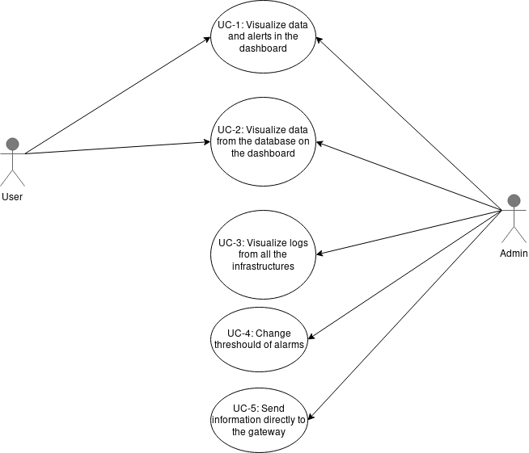

2 - SPECIFICATION¶
2.1 Features, system scenarios and processes¶
2.1.1 Features¶
- FE-1: Show every data from the sensors in a temporal scale
- FE-2: Search in house history
- FE-3: Send alerts when the values are above/below the threshold
- FE-4: Adding sensors from api (REST)
- FE-5: Monitoring the sistem
2.1.2 Actors / use cases / stories¶
Actors
- Users: A person who uses the dashboard and the system
- Admin of system : The person who is responsable for the system and the availability of the services
Use cases
- UC-1: Visualize data and alerts in the dashboard
- UC-2: Visualize data from the database on the dashboard
- UC-3: Visualize logs from all the infrastructures
- UC-4: Change threshould of alarms
- UC-5: Send information directly to the gateway

Figure: Use cases
User Stories
- US-1: As a user I want to access the dashboard so I can see real time information.
- US-2: As a user I want to navigate in the dashboard to analize historic information.
- US-3: As a user I want to change time scale in my dashboard so I can easily see what I want.
- US-4: As a administrator I want to change the temperature alarm threashould to trigger the alert at desire value.
- US-5: As a user I want to be alerted if alarm event is triggered so I can do something.
- US-6: As a user I want to access historic data even offline so I can analize historic data.
- US-7: As a administrator I want to have full access to data and logs so I can monitorize the system.
2.2 Requirements and tests¶
2.3 Architecture: Components¶

Figure 2: Solution architecture with main modules
- Controllers: Simulation of sensors
- Gateway: REST API
- System Monitoring: ELK stack to show all logs and infos of each part of the system
- DB : Database to make data persistence
- Dashboard: Website to show all data from sensors (past and real time)
- Event Detector and Processing Units: Modules that processes data
- BUS : Message Broker
2.3.1 Features / functionality¶
2.3.2 Interfaces / connections¶
| Component | Interfaces | Port | Data format |
|---|---|---|---|
| 2 | tomcat endpoint | 12214 | JSON |
| 4 | postgres | 5432 | JPA |
| 5 | websocket | 8080 | |
| 7 | rabbit mq | 5672 | message(json) |